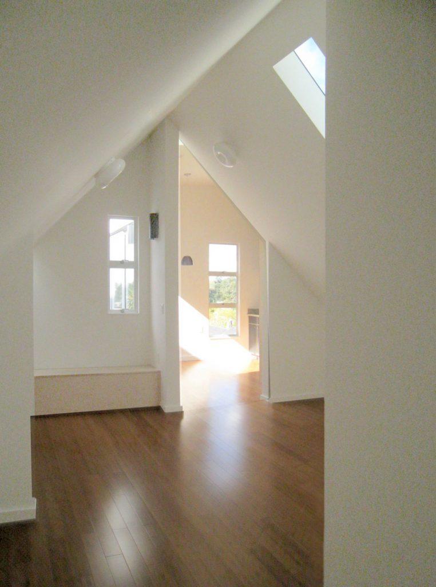
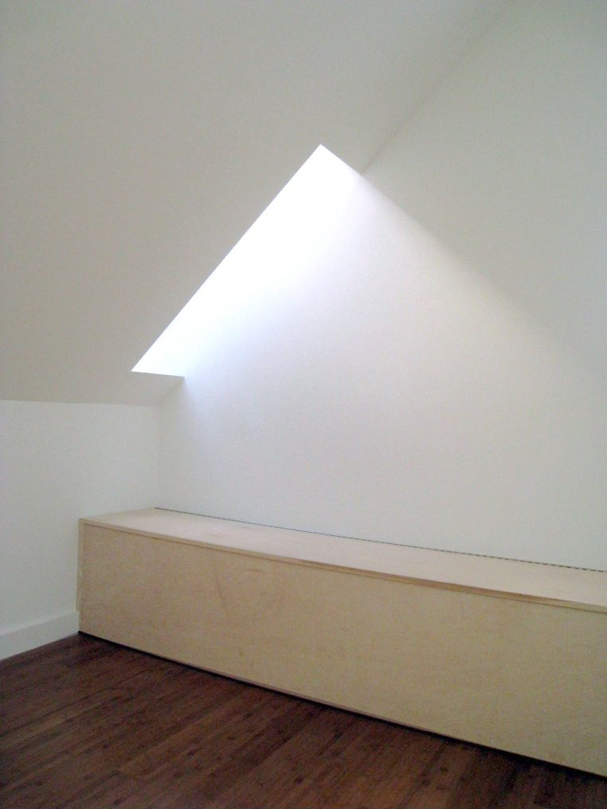
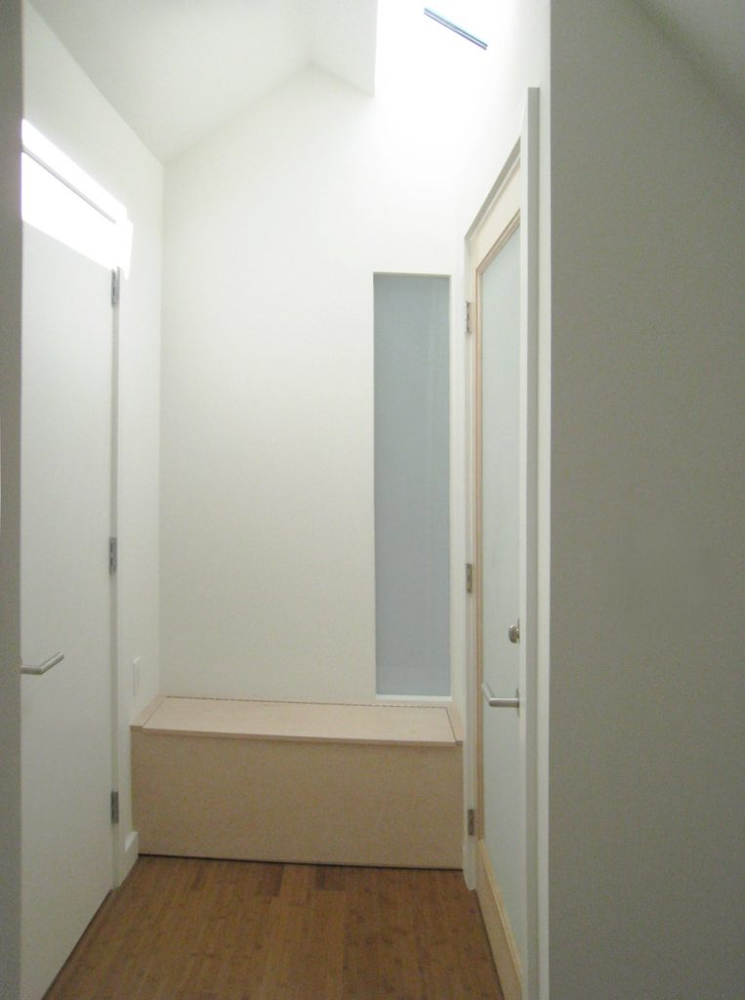
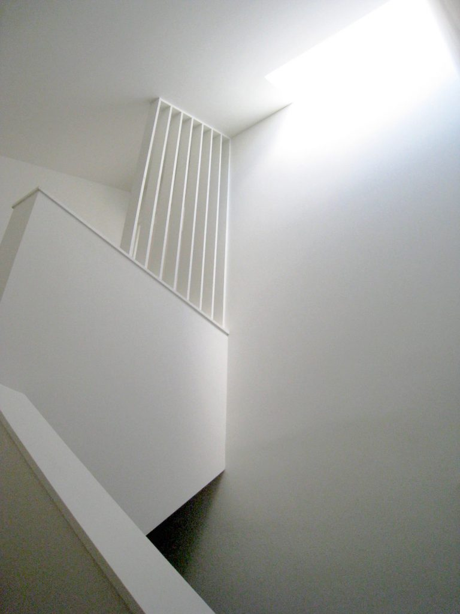
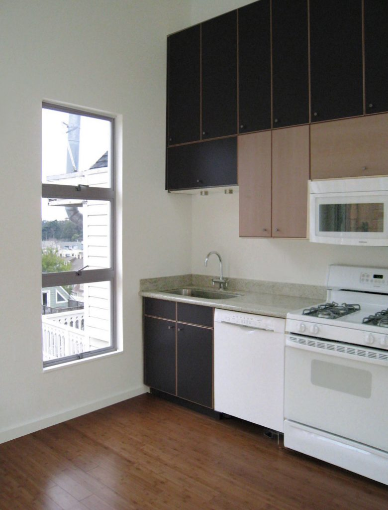

BELVEDERE RESIDENCE






Press

BELVEDERE RESIDENCE, 2009
SAN FRANCISCO, CA
A 1,350 sq.ft. addition and build-out of an unfinished gable attic into a new top-level unit in Cole Valley was completed within a tight budget. In response to the client’s desire to bring ample sunlight into the new spaces, a series of light “slots” were strategically located throughout the roof. These skylights were positioned in corners and adjacent to walls to heighten the presence of the light across the unit. The resulting shafts of light align with built-in furniture such as benches, creating a play with light and scale. A high shed roof was added over the kitchen, opening the space towards a view of Golden Gate Park.
© 2023 BACH ARCHITECTURE. All rights reserved. | 3752 20th Street, San Francisco, CA 94110 | (415) 425-8582 | info@bach-architecture.com